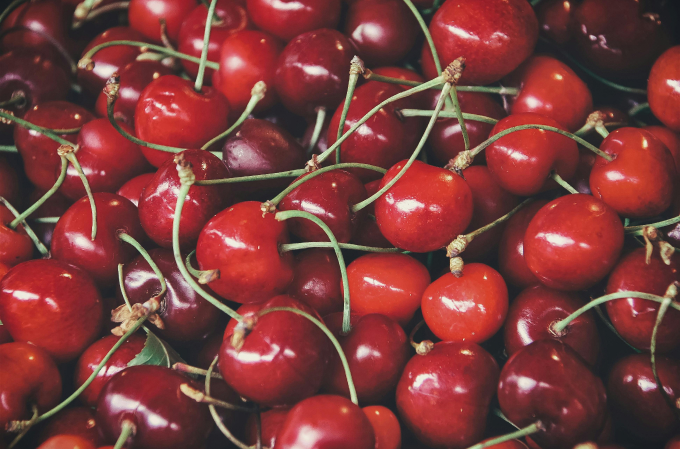

☰
Home
About
Step 1
Step 2
Step 3
Step 4
Step 5
Step 6
5. PREPARING THE KIRCH STRUP/CHERRY LIQUEUR

KIRSCH SYRUP/CHERRY LIQUEUR
130 gr. water
100 gr. white sugar
70 gr. kirsch or cherry liqueur
Heat water and sugar in a saucepan over medium heat until dissolved.
Turn off the heat and add kirsch or cherry liqueur.
Set aside until ready to use.
Back
Next